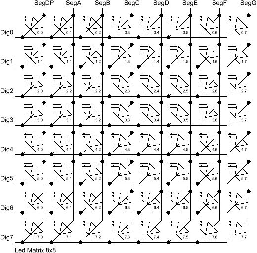
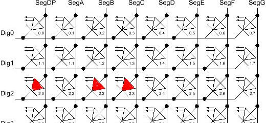
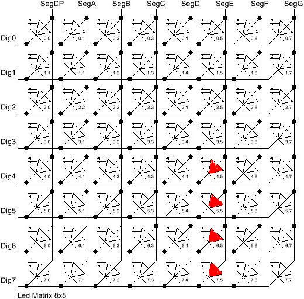

The Arduino library code
The LedControl library was initially written for Arduino boards based on 8-bit
AVR processors. But since the code does not use any sophisticated internal
functions of the processor it is highly portable und should run on any
Arduino(-like) board that supports the pinMode() and digitalWrite()
functions.
A single MAX72XX Led driver is able to control 64 Leds. The library supports up to 8 daisy chained MAX72XX drivers. Controlling 512 Leds should be more than enough for most purposes.
The library code comes with three demo sketches. Your probably want to have a look at this code while reading this section. The demo code is well documented and provides some insight how all the different parts of the library work together.
Library initialization
To include the library into your Arduino code you have to write a few lines of initialization code.
Add the library to your sketch
This works like with any other Arduino libray, you can either use the
Include Library menu function from IDE, or you simply add an
#include "LedControl.h"
statement to the top of your sketch.
Create a LedControl variable
All library API-functions are called through a variable of type
LedControl which should be defined right at the top
of your sketch to make it acessible to the rest of the projects code.
The typical code for library initialization looks like this :
/* Include the LedControl library */
#include "LedControl.h"
/* Create a new LedControl variable.
* We use pins 12,11 and 10 on the Arduino for the SPI interface
* Pin 12 is connected to the DATA IN-pin of the first MAX7221
* Pin 11 is connected to the CLK-pin of the first MAX7221
* Pin 10 is connected to the LOAD(/CS)-pin of the first MAX7221
* There will only be a single MAX7221 attached to the arduino
*/
LedControl lc1=LedControl(12,11,10,1);
The initialization code for the variable through which we talk to the MAX72XX
devices takes 4 arguments. The first 3 arguments are the pin-numbers on the
Arduino that are connected to the MAX72XX. These can be any of the digital
IO-pins on an arduino. In the example pins 12,11 and 10 where choosen
arbitrarily. The library code does no sanity checks on the pin-numbers to be
valid in any way. Passing in something stupid (pin 123 ??), or simply the
wrong pin-number will break the code without notice or error messages. You
don't have to initialize the IO-pins as outputs or set them to a certain state,
the library will do that for you.
The fourth argument to LedControl(dataPin,clockPin,csPin,numDevices) is the
number of cascaded MAX72XX devices you're using with this LedControl. The
library can address up to 8 devices from a single LedControl-variable. There
is a little performance penalty implied with each device you add to the chain,
but the amount of memory used by the library-code will stay the same, no matter
how many devices you set. Since one LedControl cannot address more than 8
devices, only values between 1..8 are allowed here.
If you sketch needs to control more than 8 MAX72XX, another
LedControl-variable needs to be created that uses 3 different pins on your
arduino-board.
#include "LedControl.h"
// Create a LedControl for the first 8 devices...
LedControl lc1=LedControl(12,11,10,8);
// ... and another one for the next 8 devices.
LedControl lc2=LedControl(9,8,7,8);
Get the number of attached devices
There is no way to read the IO-pin numbers from the code, but there is a
function that gets the maximum number of devices attached to an LedControl.
/* Gets the maximum number of devices attached to this LedControl.
* Returns :
* int the number of devices attached to this LedControl */
int LedControl::getDeviceCount();
The function is used to loop over the full list of attached MAX72XX devices.
Here is a piece of code that switches all of the MAX72XX-devices from
power saving mode into normal operation. The idea behind this code
should be clear even though the shutdown(addr) function is
introduced later on.
#include "LedControl.h"
lc1=LedControl(12,11,10,5);
void setup() {
for(int index=0;index<lc1.getDeviceCount();index++) {
lc1.shutdown(index,false);
}
}
We iterate over the list of devices by an index that runs from 0 to
getDeviceCount()-1. The index is the address of each device.
This address is the first argument of every function that sets
a feature or a (Led-)value on a device.
Note that getDeviceCount() returns the number of devices attached, but the
address of an device starts at 0 for the first one, 1 for the second one,..
getDeviceCount()-1 for the last one.
Power saving mode
Leds consume quite a lot of energy when they are lit. Battery operated devices need a way save power by switching the whole display off, when the user doesn't need it. The MAX72XX supports a power shutdown mode.
In shutdown mode the device switches off all the Led's on the display, but the data is retained. When the device comes out of shutdown mode the same Leds will be lit as before it went to sleep. It is even possible to send new data during shutdown mode. When the device is reactivated, the new data will appear the display. Here is an example for an invisible countdown on a 7-segment display:
void countDown() {
int i=9;
lc.setDigit(0,(byte)i,false);
//The digit '9' appears on the display
delay(1000);
//Go into shutdown mode
lc.shutdown(0,true);
//and count down silently
while(i>1) {
//data is updated, but not shown
lc.setDigit(0,(byte)i,false);
i--;
delay(1000);
}
//Coming out of shutdown mode we have already reached '1'
lc.shutdown(0,false);
lc.setDigit(0,(byte)i,false);
}
Here is the prototype for method LedControl.shutdown(addr,status)
/*
* Set the shutdown (power saving) mode for the device
* Params :
* addr The address of the display to control
* status If true the device goes into power-down mode. Set to false
* for normal operation.
*/
void shutdown(int addr, bool status);
Note : The MAX72XX is always in shutdown mode when the Arduino is powered up.
Limiting the number of digits (ScanLimit)
This is a kind of experts feature not really needed by most users of the
library. Since the library initializes the MAX72XX to safe default values,
you don't have to read this section just to make your hardware work
When a new LedControl is created it will activate all 8 digits on all devices. Each lit digit will be switched on for 1/8 of a second by the multiplexer circuit that drives the digits. If you have any reason to limit the number of scanned digits the Led's get switched on more frequently, and therefore will be on for longer periods of time.
The effect of setting the scan limit to 4 is that a lit Led is now switched on
for 1/4 of a second instead of the standard 1/8 of a second. The MAX72XX has
to provide the current on the segment-driver for a longer period of time.
You should read the relevant section of the MAX72XX datasheet carefully! Its
actually possible to destroy a MAX72XX by choosing a bad combination of
resistor RSet that limits the current going through the Led's and the number
of digits scanned by the device. The only reason to tweak the scanlimit at all,
is that the display looks too dark. But this is most likely due to the fact that
the intensity on was not raised on startup. Here's the
prototype of setScanLimit() for those who need it:
/* Set the number of digits (or rows) to be displayed.
* See datasheet for side effects of the scanlimit on the brightness
* of the display.
* Params :
* addr The address of the display to control
* limit The number of digits to be displayed
*/
void setScanLimit(int addr, int limit);
Setting display brightness
There are three factors that determine the brightness of a display.
- the value of resistor
Rsetwhich limits the maximum current going through the Led's. - the scan limit of the display. (If you read the section, you already know that I'd recommend to leave this option its safe default.)
- and a comand that allows the brightness of the Leds to be controlled from software.
With the setIntensity(int addr, int intensity) method the brightness of the
Leds can be set in 16 discrete steps(0..15). Higher values make the display
brighter. Values greater than 15 will be discarded without changing the
brightness. Even the lowest value 0 will not switch the display off
completely off.
/* Set the brightness of the display.
* Params:
* addr the address of the display to control
* intensity the brightness of the display.
void setIntensity(int addr, int intensity);
Device initialization
When a new LedControl is created the library will initialize the hardware with
- the display cleared
- the intensity set to the minimum
- the device in power saving mode
- the maximum number of digits on the device activated
A blanked display is probably what everybody wants on startup. But with the
intensity at a minimum and the device in shutdown-mode no Leds will light up in
the startup configuration. Most users will do their own initialization inside
the setup()-function. Here is a piece of code that can be used as a template
for creating an LedControl that is ready to light up Leds at a medium
brightness as soon as display data arrives.
#include "LedControl.h"
LedControl lc=LedControl(12,11,10,1);
void setup() {
//wake up the MAX72XX from power-saving mode
lc.shutdown(0,false);
//set a medium brightness for the Leds
lc.setIntensity(0,8);
}
Led-Matrix
With all the initialization code in place its now time to control some Leds.

Clearing the display
The name of the function LedControl.clearDisplay(addr) already suggests what
it does.
/* Switch all Leds on the display off.
* Params:
* addr The address of the display to control
*/
void clearDisplay(int *addr);
All Leds on the selected device are switched off. Its important to understand that this is different from shutdown mode, where the data is retained.
Control a single Led
This is the prototype of the function that switches a single Led on or off.
/* Set the status of a single Led.
* Params :
* addr address of the display
* row the row of the Led (0..7)
* col the column of the Led (0..7)
* state If true the led is switched on, if false it is switched off
*/
void setLed(int addr, int row, int col, boolean state);
The idea behind the addr and state arguments should be clear, but what do
the row and column arguments refer to? This depends on the wiring between
the MAX72XX and your matrix. The LedControl-library assumes the setup used
in this schematic:

There are 8 rows (indexed from 0..7) and 8 columns (also indexed from 0..7) in
the matrix. If the Led located at the very right of the 3'rd row from the top is
to be lit, the index of the Led 2.7 must used as the row and column arguments.
This code excerpt shows how few Leds on the first MAX72XX device are set
//switch on the led in the 3'rd row 8'th column of the device at addr=0
lc.setLed(0,2,7,true);
//now the Led at row 0, second from the left side
lc.setLed(0,0,1,true);
delay(500);
//switch the first Led off (second one stays on)
lc.setLed(0,2,7,false);
The setLed() function is fine for lighting up a few Leds, but if more Leds
need to be updated, this would require many lines of code. So there are two more
functions in the library, that control a complete row and column with a single
command.
Control the row of a matrix
The setRow(addr,row,value)-function takes 3 arguments. The first one is the
already familiar address of the device. The second one is the row that needs to
be updated and the third one the value to be set for this row.
The value argument takes an 8-bit wide byte where each bit set to 1
represents a lit led and a bit set to 0 a Led that is to be switched off.
For an example, the Leds marked in red are to be switched on, all others switched off.

The index for the row to be updated is 2 (counted from the top). The value
argument has to be set to the byte-value for the Leds to be lit. The easiest
approach is to include the standard header-file <binary.h> into to your
sketch. The value is written in binary encoding is an exact mapping between bits
set to 1 and the Leds to be switched on.
//include this file at the top of your Sketch
<binary.h>
// ...Initialization code omitted ...
//Setting the leds from the third row (index=2) of the first device
lc.setRow(0,2,B10110000);
When specifying the value in binary encoding is not possible, a simple table that maps the decimal values of each bit to the Led it affects can help. The two rows at the bottom show the decimal value for the example is to be calculated.
| Led2.0 | Led2.1 | Led2.2 | Led2.3 | Led2.4 | Led2.5 | Led2.6 | Led2.7 | |
|---|---|---|---|---|---|---|---|---|
| Bit-Value | 128 | 64 | 32 | 16 | 8 | 4 | 2 | 1 |
| Led On? | Yes | No | Yes | Yes | No | No | No | No |
| Row-Value | 128 | 0 | 32 | 16 | 0 | 0 | 2 | 0 |
value=176 (128+32+16)
The statement lc.setRow(0,2,176) updates the third row on the
first MAX72XX attached to the Arduino.
The setRow()-call is obviuosly much faster than calling setLed()
eight times for all the Leds in a row. The Hardware of a MAX72XX
causes the setRow() function also to be 8 times faster than the
setColumn() function introduced in the next section.
If performance of the sketch code is important factor use the setRow()
function whereever possible.
The Prototype of the function
/* Set all 8 Led's in a row to a new state
* Params:
* addr ddress of the display
* row row which is to be set (0..7)
* value each bit set to 1 will light up the corresponding Led.
*/
void setRow(int addr, int row, byte value);
Control the column of a matrix
The setColumn()-function works just like the setRow()command
but updates 8 Leds in a vertical column.
Again, the Leds marked in red are to be switched on, all others switched off.

This time the 4 leds at the bottom of column 6 are to be lit. With binary encoding the leftmost bit in the value refers to the Led at the top of the column.
//include this file at the top of your Sketch
<binary.h>
// ...Initialization code omitted ...
//Setting the leds from the third row (index=2) of the first device
lc.setRow(0,2,B00001111);
A table similar to the one from the setRow() section helps
if binary encoding of the value is not an option.
| Led2.0 | Led2.1 | Led2.2 | Led2.3 | Led2.4 | Led2.5 | Led2.6 | Led2.7 | |
|---|---|---|---|---|---|---|---|---|
| Bit-Value | 128 | 64 | 32 | 16 | 8 | 4 | 2 | 1 |
| Led On | Yes | No | Yes | Yes | No | No | No | No |
| Row-Value | 128 | 0 | 32 | 16 | 0 | 0 | 2 | 0 |
=15 (8+4+2+1)
The Prototype of the function:
/* Set all 8 Led's in a column to a new state
* Params:
* addr address of the display
* col column which is to be set (0..7)
* value each bit set to 1 will light up the corresponding Led.
*/
void setColumn(int addr, int col, byte value);
Control 7-Segment displays

Print numbers on a 7-Segment display
The most common use of 7-segment displays is to print numbers. The LedControl library
has a function that simply takes an argument of type byte and prints the corresponding
digit on the specified column. Valid values for the digit are from 0 to 15 to allow
displaying hex values . Values greater than 15 (or negative values) are silently discarded.
The function also provides an argumment to switch decimal point on the column on or off.
Here is a code excerpt that prints an int value (-999..999) on a display with 4 digits.
void printNumber(int v) {
int ones;
int tens;
int hundreds;
boolean negative;
if(v < -999 || v > 999)
return;
if(v<0) {
negative=true;
v=v*-1;
}
ones=v%10;
v=v/10;
tens=v%10;
v=v/10; hundreds=v;
if(negative) {
//print character '-' in the leftmost column
lc.setChar(0,3,'-',false); }
else {
//print a blank in the sign column
lc.setChar(0,3,' ',false);
}
//Now print the number digit by digit
lc.setDigit(0,2,(byte)hundreds,false);
lc.setDigit(0,1,(byte)tens,false);
lc.setDigit(0,0,(byte)ones,false);
}
The prototype for the function:
/* Display a (hexadecimal) digit on a 7-Segment Display
* Params:
* addr address of the display
* digit the position of the digit on the display (0..7)
* value the value to be displayed. (0x00..0x0F)
* dp sets the decimal point.
*/
void setDigit(int addr, int *digit, byte value, *boolean dp);
The digit-argument must be in the range 0..7 because the MAX72XX can control
up to eight digits on a 7-segment display.
Print characters on a 7-Segment display
There is a limited set of characters that make (visual) sense on a 7-segment
display. A common use would be the - character to prepend negative values and the 6
characters from 'A'..'F' for integer hex-values.
The setChar(addr,digit,value,dp)-function accepts a value of type char for the
in the range of a 7-bit ASCII encoding. Since the recognizable patterns are
limited, most of the defined characters will print the <SPACE>-char. But there
are quite a few characters that make sense on a 7-segment display.
Here is the set of printable characters:
0 1 2 3 4 5 6 7 8 9A a(prints upper case)B b(prints lower case)C c(prints lower case)D d(prints lower case)E e(prints upper case)F f(prints upper case)H h(prints upper case)L l(prints upper case)P p(prints upper case)-(the minus sign). ,(lights up the decimal-point)_(the underscore)<SPACE>(the blank or space char)
The hexadecimal characters (0..F) have been redefined at the
character values 0x00...0x0F. This makes it possible to mix digits
and characters values. The byte value for the setDigit()-function
can be used with the setChar() and will print the hexadecimal
representation of the value.
The prototype of the function looks very similar to the one for displaying digits.
/* Display a character on a 7-Segment display.
* Params:
* addr address of the display
* digit the position of the character on the display (0..7)
* value the character to be displayed.
* dp sets the decimal point.
*/
void setChar(int addr, int digit, char value, *boolean dp);
Library Demos
The library comes with three well documented demo sketches. Basic methods to control a Led-Matrix, a 7-Segment display and access to daisy-chained MAX72XX devices are shown. The demos might be a good start for writing your own sketches.
 LedControl Project on Github
LedControl Project on Github e.fahle@wayoda.org
e.fahle@wayoda.org